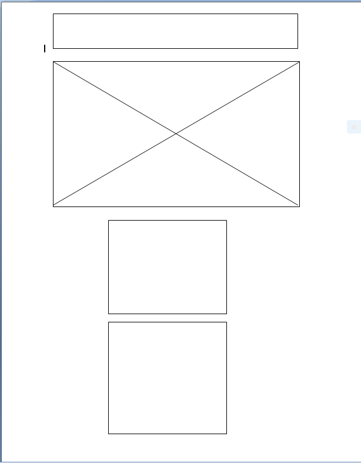
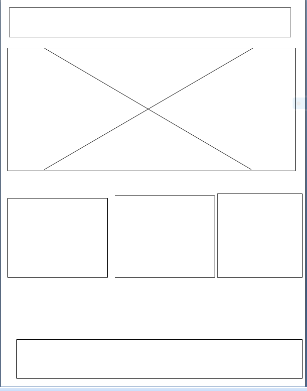

Site Name: Flower-Hub
This name reflects the beauty and community of florists coming together to showcase their businesses to the world.
The purpose of this site is to help people and businesses grow and understand the beauty in flowers and the environment at large.

